Non-standard traffic lights
PRIVATE LAND TRAFFIC LIGHTS
Now lets take a look at some (non-Swarco) traffic lights on private land, on barrier entry systems.
ATG - LED Barrier traffic light

PILOMAT - LED Barrier traffic light
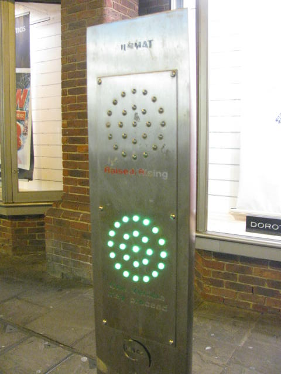
UNKNOWN - LED Barrier traffic light
Any ideas who made this? This was found on a Avon Barrier Company barrier.
This was on a "Avon Barrier Company" barrier.
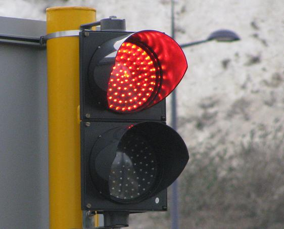
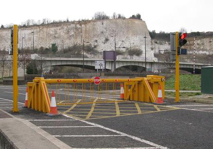
UNKNOWN - Large barrier traffic light
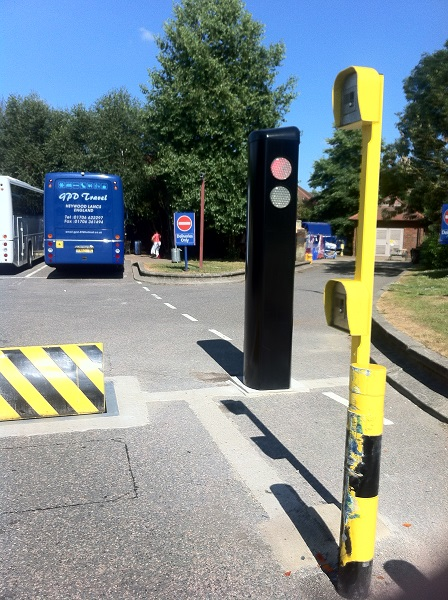
UNKNOWN - Large barrier traffic light
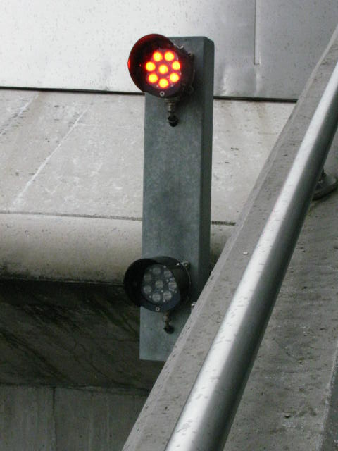
PIKE - Barrier traffic light
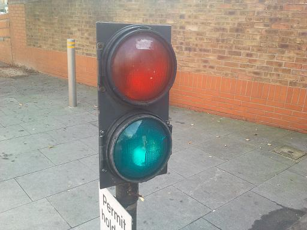
PIKE - Wigwag
Despite this being built in the present day, it looks more like a mellor!
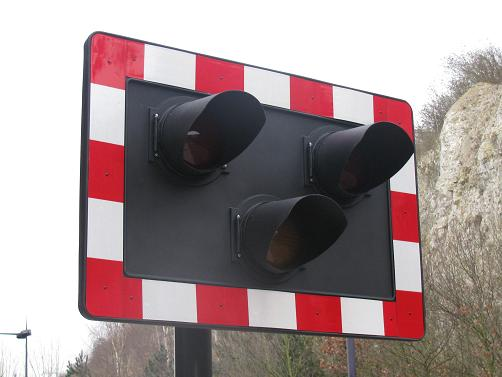
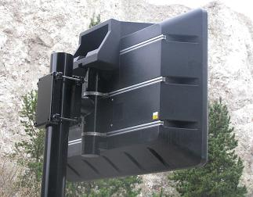
EVIL TEMPORARY TRAFFIC LIGHTS
These are so annoying.
PIKE
These things take absolutly ages, and they go wrong and stop working all the time. I can't stand these. (Some of these are actually quite old, it seems that most of the old non-LED ones have been converted to LED).
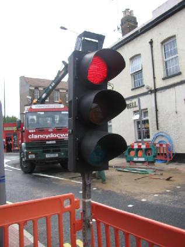
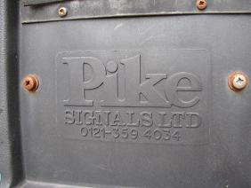
NEW PIKE
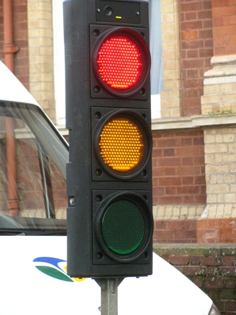
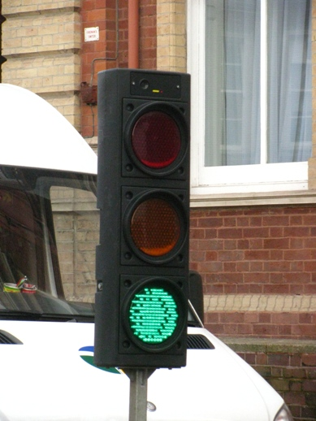
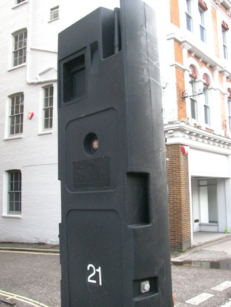
PEEK
This is the only tempory traffic light that actually works properly. (and the reason for that is because it is made by a real traffic light company). These don't break down all the time like the others. And the best thing about them is that the the traffic light itself is exactly the same as the normal Peek LED (without the hoods). It has SIRA lenses, and no color in the lenes, so it works well in bright sunlight.
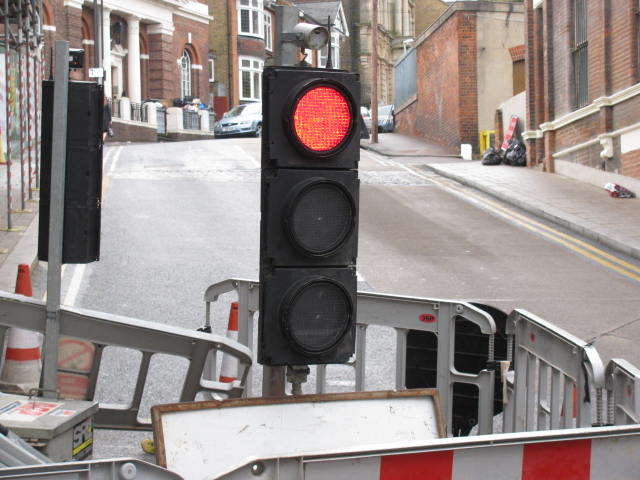
MONITRON and COYDS
These are the worst ever traffic lights for not being visable on a sunny day that I have ever seen. They are awefull, why do they have colord lenses when they are LED anyway. These things also stop working on a regular basis aswell.
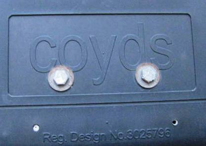
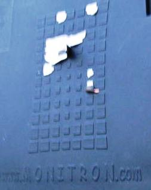
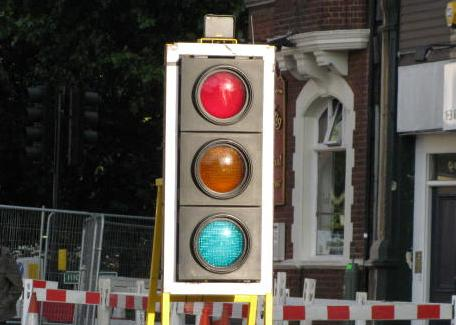
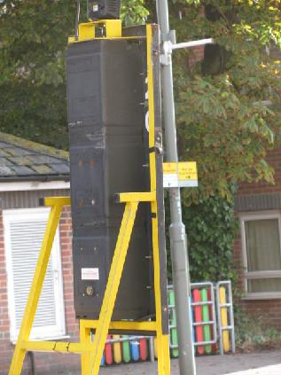
This one apears to have been retrofitted with LEDs
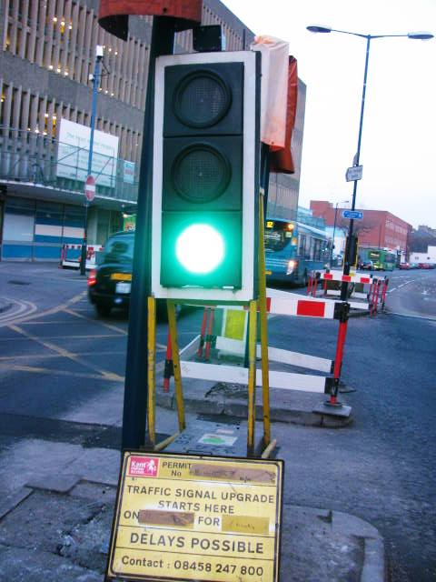
This one apears to be an updated design. Finally they have used clear lenses (or maybe this is a retrofit by someone who was fed up of them apearing lit all the time).
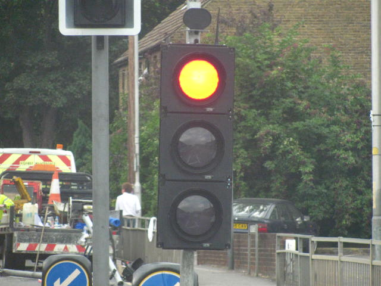
OTHER STUFF
Here are some random traffic lights

WALLACE AND TIERNAN - boat lights
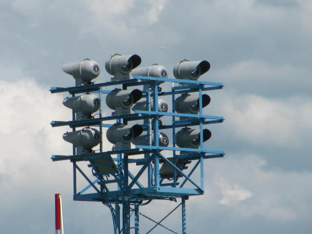
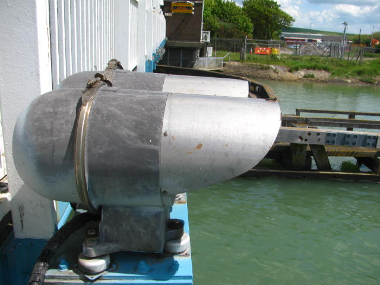
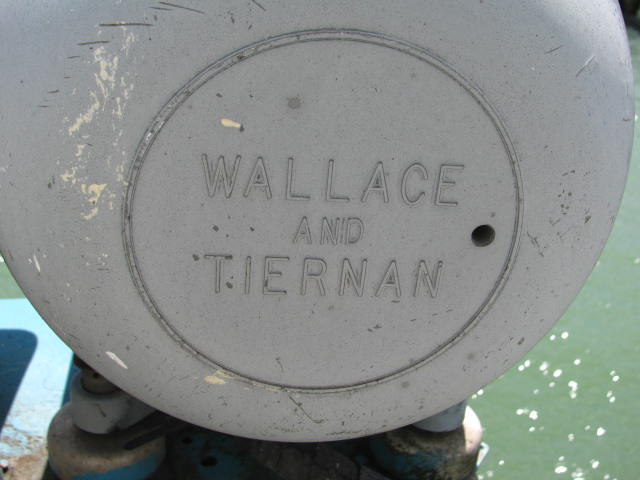
Beach promenade warning light (comes on when its too dangerous to go on the promenade)
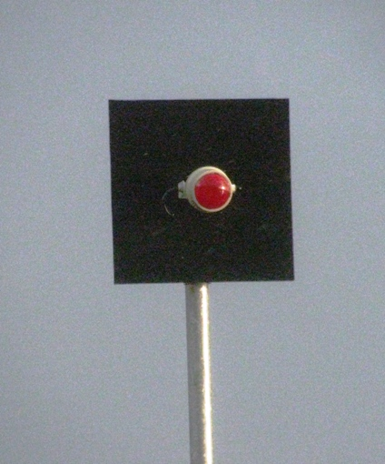
SIMMONS SIGNS - LED School lights
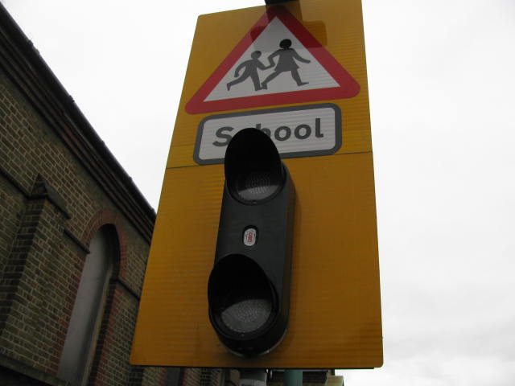
UNKNOWN MAKE - School lights
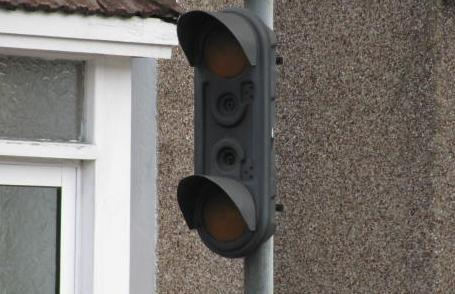
UNKNOWN MAKE - New motorway displays
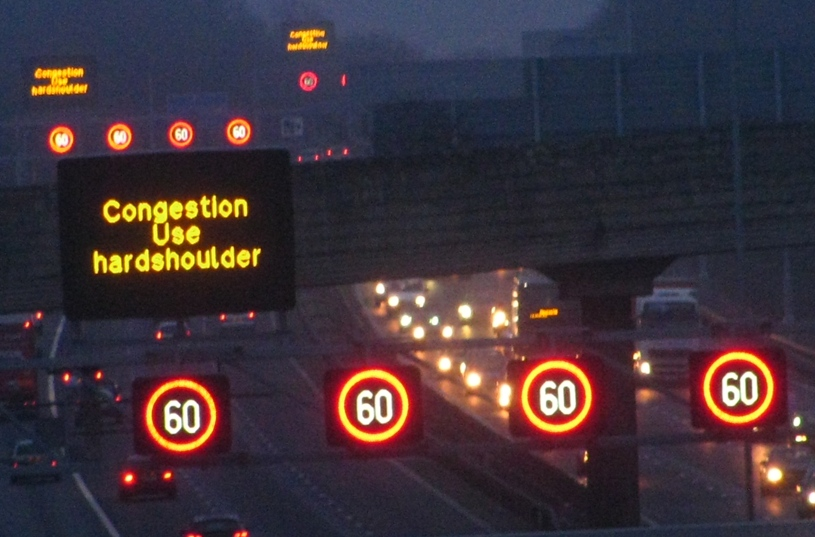
SIMMONS SIGNS - plastic street furnature
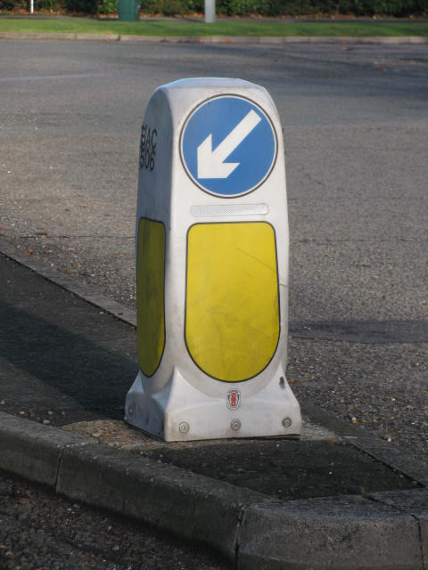
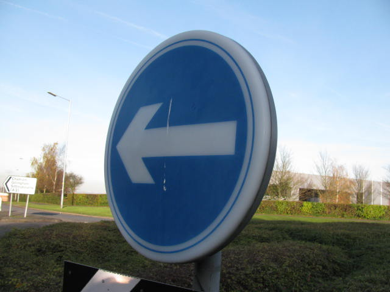
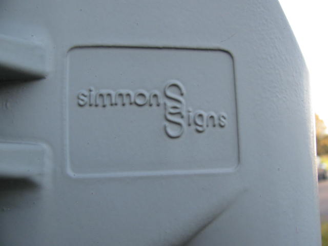
Over polished traffic light for decoration
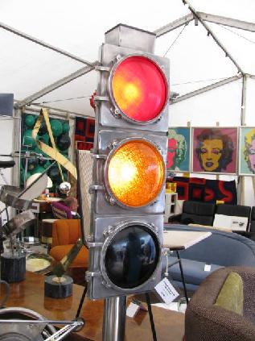
CLICK HERE TO GO BACK TO MY TRAFFIC LIGHTS PAGE